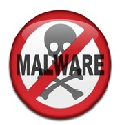

Seguridad Informatica

Seguridad Informatica
Puedes visitar el siguiente link para saber mas https://www.universidadviu.com/la-seguridad-informatica-puede-ayudarme/


Tips, Seguridad Informatica
- Usar contraseñas seguras
- No abrir correo spam
- Siempre navega por sitios confiables (https://)
- Nunca suministres informacion personal
- En lo posible conectaser a redes seguras
